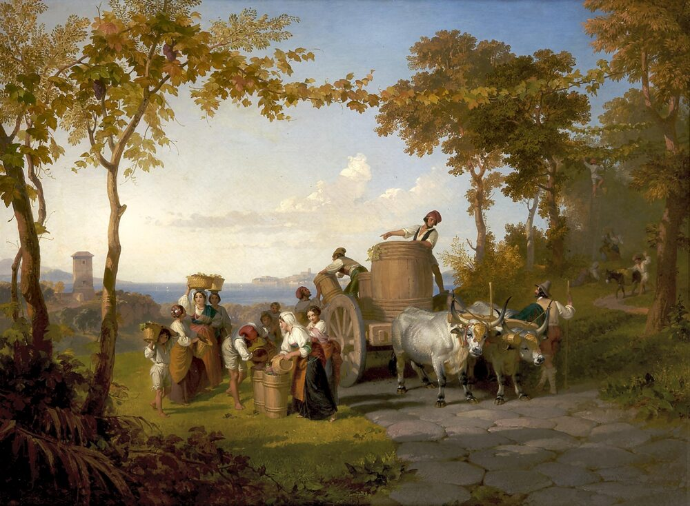
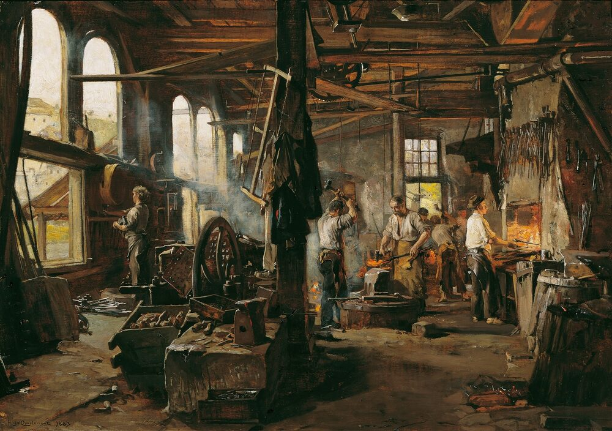

B1 · Food & Dining
How Cachaça Is Made
Fresh sugarcane juice, a copper still, and the one difference that separates it from rum.
Play the audio and follow along, then read it again on your own. Tap or hover over a highlighted word to see what it means.
Cachaça is a Brazilian spirit distilled from sugarcane, and it is the base of the caipirinha. It is often described as a kind of rum, which is close enough to be useful and wrong in one important respect. Most rum is made from molasses, the thick dark syrup left over once sugar has been crystallised out of the cane juice. Cachaça is made from the fresh juice itself, pressed and fermented within hours of cutting. That single difference is why the two taste as unlike each other as they do: cachaça keeps a grassy, vegetal quality that molasses-based spirits lose.
The process has four stages, and the first is the one with the tightest deadline. The cane is cut and crushed, and the juice is filtered. From the moment the cane is cut it begins to deteriorate, so a serious producer presses within a day. The juice is then fermented in tanks for anything from a day to a few days, with yeast converting the sugar into alcohol. Some distilleries use commercial yeast for consistency; others use strains they have cultivated on the farm for generations, which is one of the things that makes a producer's cachaça taste like theirs and nobody else's.

Third comes distillation, traditionally in copper pot stills. Copper is not decorative: it reacts with sulphur compounds produced during fermentation and removes flavours that would otherwise be unpleasant. The distiller separates the run into three parts — the head, the heart and the tail — and keeps only the heart. The head contains volatile compounds that come off first and taste harsh; the tail turns heavy and oily. Deciding exactly where to make each cut is the distiller's central skill, and it cannot be automated in a small operation because it is done by smell and taste.

The fourth stage, ageing, is optional, and it is where cachaça becomes genuinely distinctive. Unaged cachaça — branca, white — is bottled straight away and tastes of the cane: fresh, grassy, a little sharp. Aged cachaça is rested in wooden barrels for months or years. Brazilian producers use oak, as the rest of the spirits world does, but they also use native woods that almost nobody else has access to: amburana, which gives a warm, spiced character close to cinnamon and vanilla; jequitibá rosa, which is much more neutral and lets the cane show through; balsam and others. A row of the same spirit aged in five different woods will produce five recognisably different drinks.
What separates a good bottle from a poor one comes down to a few things. Cane cut at the right ripeness and pressed quickly. A controlled fermentation rather than a rushed one. A careful cut during distillation, which is what removes the harshness people associate with cheap cachaça. And, if it has been aged, decent barrels and enough patience.
As for how to drink it, the caipirinha — cachaça, lime, sugar, ice — is made with branca, and a good branca improves it considerably more than most people expect. Aged cachaça is generally drunk on its own, at room temperature, the way you would drink a whisky. Using a well-aged bottle in a cocktail is not an error exactly, but you will be paying for wood character that the lime then covers up.
Key Vocabulary
- spirit a strong alcoholic drink made by distillation
- to distil to concentrate alcohol by heating a liquid and condensing the vapour
- sugarcane the tall grass whose juice is the source of sugar
- molasses the thick dark syrup left after sugar has been crystallised out
- strain a particular variety of a microorganism such as yeast
- consistency the quality of producing the same result every time
- pot still a simple copper vessel used to distil in batches
- compound a substance formed from two or more chemical elements
- volatile evaporating readily at low temperature
- harsh unpleasantly rough in taste
- cut the point at which a distiller stops collecting one part of the run
- to age to store a spirit in wood so that it develops flavour
- barrel a curved wooden container used for ageing spirits
- ripeness the stage at which a crop is ready to be harvested
How Cachaça Is Made — B1 · Food & Dining · Renan the Teacher, English Language Academy · https://renangrossi.github.io/englishclasses/reading/b1/cachacas.html
Interactive Exercises
Practice
Complete each exercise, then click Submit to see your score and an explanation for every answer.
Speaking & Writing
Discussion
There are no right answers here — use these to practice speaking, or write a short answer to each.
- The text says the distiller's central skill cannot be automated. What other jobs depend on judgment that a machine cannot make?
- Cachaça is often called “Brazilian rum”. Is a rough comparison helpful when introducing something, or does it get in the way?
- Five woods produce five different drinks from the same spirit. Does that make the wood or the spirit the more important ingredient?
- Is there a product from your country that outsiders regularly misunderstand or mislabel?
- Write about 120 words describing how something traditional from your country is made, using the stages of the process in order.